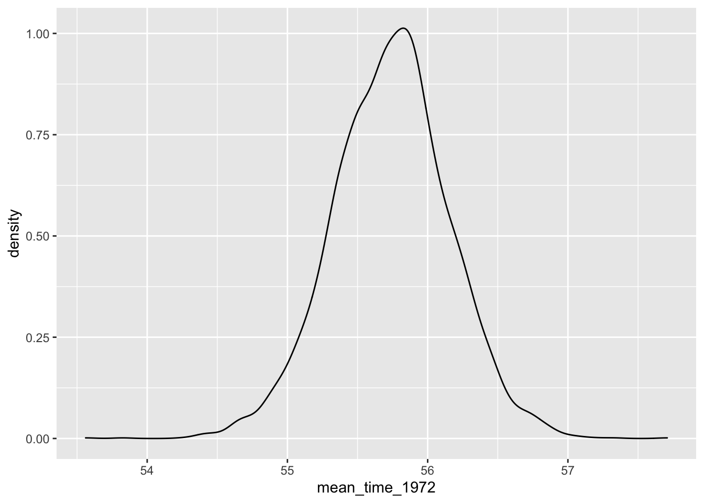

Bayesian Modeling Using Stan
2020-07-25
Chapter 1 Introduction to the brms Package
In Probability and Bayesian Modeling, the JAGS software is illustrated to fit various Bayesian models by Markov Chain Monte Carlo (MCMC) methods. JAGS consists of a mix of conjugate, Gibbs sampling, and Metropolis algorithms. In recent years, Hamiltonian sampling and the associated Stan software are becoming popular in fitting Bayesian models by MCMC.
The purpose of this supplement is to illustrate Bayesian fitting of common statistical models using the brms package which is a popular interface for the Stan software. This material should help the user learn the basic features of fitting Bayesian models using Stan after becoming familiar with the models in Probability and Bayesian Modeling.
1.1 Installing the brms package
Basic information about installing the brms package is available at https://github.com/paul-buerkner/brms
Since the package is an interface to the Stan software, a C++ compiler is required.
1.2 One Bayesian fitting function brm()
One attractive feature of the brms package is that one function brm() can be used to fit all of the models described in Probability and Bayesian Modeling.
The basic function syntax of the brm() function is:
brm(model_description,
data = my_data,
family = the_family,
prior = the_prior)where
model_descriptionis the description of the regression model including any random effects similar to the notation used in theglm()andglmerfunctionsmy_datais the data frame containing the datafamilyis the sampling family (normal, binomial, Poisson, etc)prioris the specification of the prior on the regression terms and the error standard deviation
The output of the brm() function is an object of class brmsfit that contains the posterior samples and other information about the model.
1.3 A Nonlinear Regression Example
Here is an illustration of the use of the brms package for a nonlinear regression model applied to a baseball model.
1.5 Data
Collect the number of wins, losses, runs scored, and runs allowed for the 30 baseball teams in the 2019 season.
Teams %>%
filter(yearID == 2019) %>%
select(teamID, W, L, R, RA) %>%
mutate(WL = W / L, RR = R / RA) -> d
d## teamID W L R RA WL RR
## 1 ARI 85 77 813 743 1.1038961 1.0942127
## 2 ATL 97 65 855 743 1.4923077 1.1507402
## 3 BAL 54 108 729 981 0.5000000 0.7431193
## 4 BOS 84 78 901 828 1.0769231 1.0881643
## 5 CHA 72 89 708 832 0.8089888 0.8509615
## 6 CHN 84 78 814 717 1.0769231 1.1352859
## 7 CIN 75 87 701 711 0.8620690 0.9859353
## 8 CLE 93 69 769 657 1.3478261 1.1704718
## 9 COL 71 91 835 958 0.7802198 0.8716075
## 10 DET 47 114 582 915 0.4122807 0.6360656
## 11 HOU 107 55 920 640 1.9454545 1.4375000
## 12 KCA 59 103 691 869 0.5728155 0.7951669
## 13 LAA 72 90 769 868 0.8000000 0.8859447
## 14 LAN 106 56 886 613 1.8928571 1.4453507
## 15 MIA 57 105 615 808 0.5428571 0.7611386
## 16 MIL 89 73 769 766 1.2191781 1.0039164
## 17 MIN 101 61 939 754 1.6557377 1.2453581
## 18 NYA 103 59 943 739 1.7457627 1.2760487
## 19 NYN 86 76 791 737 1.1315789 1.0732700
## 20 OAK 97 65 845 680 1.4923077 1.2426471
## 21 PHI 81 81 774 794 1.0000000 0.9748111
## 22 PIT 69 93 758 911 0.7419355 0.8320527
## 23 SDN 70 92 682 789 0.7608696 0.8643853
## 24 SEA 68 94 758 893 0.7234043 0.8488242
## 25 SFN 77 85 678 773 0.9058824 0.8771022
## 26 SLN 91 71 764 662 1.2816901 1.1540785
## 27 TBA 96 66 769 656 1.4545455 1.1722561
## 28 TEX 78 84 810 878 0.9285714 0.9225513
## 29 TOR 67 95 726 828 0.7052632 0.8768116
## 30 WAS 93 69 873 724 1.3478261 1.20580111.6 The Model
We consider a statistical version of the well-known Pythagorean relationship developed by Bill James. We assume that the ratio of wins to losses \(W/L\) is normal with mean given by the kth power of the ratio of runs to runs allowed \((R / RA)^k\) and standard deviation \(\sigma\).
\[ \frac{W}{L} \sim N(\left(\frac{R}{RA}\right)^k, \sigma) \] The unknown parameters are \(k\) and \(\sigma\). For a prior we assume \(k\) and \(\sigma\) are independent where \(k\) is assumed normal with mean 2 and standard deviation 0.5, and \(\sigma\) is exponential with rate 10 (mean 1/ 10 = 0.1).
1.7 Setting up the prior in the brms package
We use the prior() function to define the priors in the Bayesian fitting.
1.8 Bayesian fitting
We use the brm() function to do the fitting. Note that we use the bf() argument to specify this nonlinear model. We indicate the data is in the data frame d, the prior specification is in prior1 and the family = gaussian argument indicates we are assuming normal errors.
fit1 <- brm(bf(WL ~ 0 + RR ^ b1, b1 ~ 1, nl = TRUE),
data = d, prior = prior1,
family = gaussian,
refresh = 0)## Compiling Stan program...## Start samplingTo confirm that we have inputted the priors correctly, we use the prior_summary() function.
## prior class coef group resp dpar nlpar bound
## 1 normal(2, 0.5) b b1
## 2 b Intercept b1
## 3 exponential(10) sigmaThe plot() function will display trace plots and density plots for each parameter.

The summary() function provides summary measures for each parameter.
## Family: gaussian
## Links: mu = identity; sigma = identity
## Formula: WL ~ 0 + RR^b1
## b1 ~ 1
## Data: d (Number of observations: 30)
## Samples: 4 chains, each with iter = 2000; warmup = 1000; thin = 1;
## total post-warmup samples = 4000
##
## Population-Level Effects:
## Estimate Est.Error l-95% CI u-95% CI Rhat Bulk_ESS Tail_ESS
## b1_Intercept 1.88 0.07 1.74 2.01 1.00 2967 2168
##
## Family Specific Parameters:
## Estimate Est.Error l-95% CI u-95% CI Rhat Bulk_ESS Tail_ESS
## sigma 0.10 0.01 0.08 0.13 1.00 3095 2664
##
## Samples were drawn using sampling(NUTS). For each parameter, Bulk_ESS
## and Tail_ESS are effective sample size measures, and Rhat is the potential
## scale reduction factor on split chains (at convergence, Rhat = 1).The posterior_samples() function outputs a data frame of simulated draws. We show the joint posterior of \((k, \sigma)\) by displaying a scatterplot of these simulations.
par_sim <- posterior_samples(fit1)
ggplot(par_sim,
aes(b_b1_Intercept, sigma)) +
geom_point(alpha = 0.2) +
increasefont() +
ggtitle("Posterior Distribution of (k, sigma)") +
centertitle()
1.9 Prediction
Suppose we are interested in predicting the number of games won in a 162 season given a value of the runs ratio.
We focus on runs ratio values equal to 0.8, 0.9, 1, 1.1 and 1.2. The posterior_predict() function will simulate draws of the W/L ratio from the posterior predictive distribution.
By use of the formula \[ W = round(162 \frac{W/L}{1 + W/L}) \] we convert these W/L ratios to games won in a 162 game season.
PP <- posterior_predict(fit1,
newdata = data.frame(
RR = seq(0.8, 1.2, by = 0.1)))
P_Wins <- round(162 * PP / (PP + 1)) %>%
as.data.frame()
names(P_Wins) <- paste("RR =",
seq(0.8, 1.2, by = 0.1))I construct jitter point clouds for the number of wins for teams with each value of the runs ratio.
P_Wins %>%
pivot_longer(
cols = starts_with("RR"),
values_to = "Number_of_Wins"
) -> P_Wins2
ggplot(P_Wins2, aes(name, Number_of_Wins)) +
geom_jitter(alpha = 0.05) +
increasefont() +
xlab("Runs Ratio") +
ylab("Number of Wins") +
ggtitle("Predicted Number of Wins") +
centertitle()